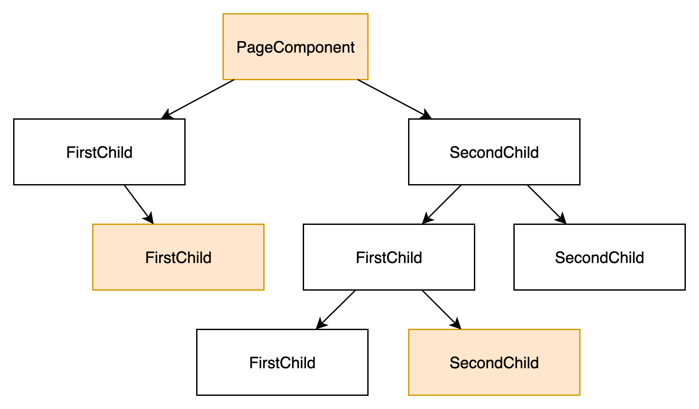

Datenmanagement im Frontend
export class ShowDataComponent {
@Input()
someData: SomeData;
@Output()
output: EventEmitter = new EventEmitter<Output>();
}
Datenmanagement im Frontend
<app-show-data
[someData]="{ ... }"
(output)="callOnOutput($event)">
</app-show-data>
Tiefe Component Hierarchien
- Daten werden durch Components "hindurchgereicht"
- Boilerplate Code

Beispiel Component Hierarchy